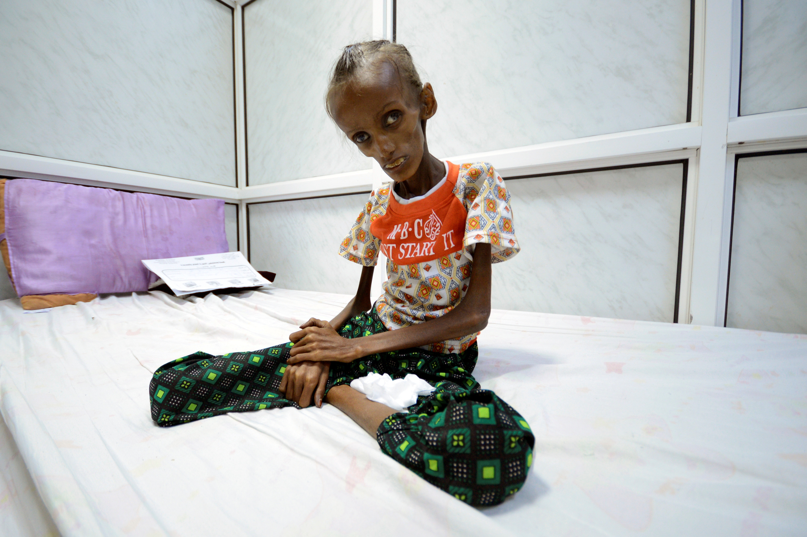

Currently, there is a global food crisis, and it is the largest one in modern history. Due to the cause of new conflicts, weather, and climate changes, the number of people starving are increasing everyday. In 2021 itself, 828 million people were suffering from starvation. This means that nearly 10% percent of the world population is starving. Every day, about 25,000 people perish bacause of starvation. This is an ongoing problem everywhere in the world. Someone never knows that whatever they are etaing at that moment could possibly be their last meal. Problems arise all the time and some of them can be unexpected, but we can always do our part to help those in need.
In Sub Sharan Africa, Starvation is the worst it could get. The population is rapidly increasing which is also affecting the amount of starved people.
This small country in Western Africa has over 17 million people starving due to civil war. Families survive with as little as bread and sweet tea. The inflation of nutritous foods causes troules for families. Sometimes, it takes weeks and days for people to eat another meal. Malnutrition women and children living in Yemen are one of the highest
Suffering staravation for 4 decades, Afghanistan if second on the list. Ever since international troops withdrew, the government went corrupt.
There are many ways that we can help save food and help people who are not as fortunate as us get food. These deeds can start from our home. We can start by not wasting any food. Say, we go to an "all you can eat" buffet. Maybe, we can start by taking a small amount and then taking more if we need it. Also, we can donate to local food drives and food charities, who will give the food to people less fortunate than us.
Donate 